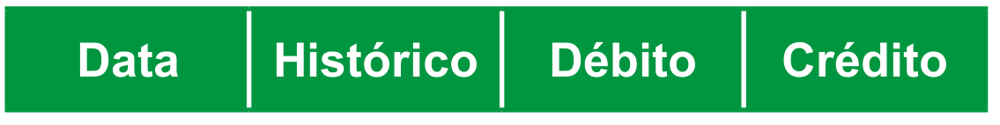

10
UNIDADE 1 - CAPÍTULO 1
11
UNIDADE 1 - CAPÍTULO 1
Com − 8,6°C, SC registra a menor temperatura do Brasil em 2021, diz Inmet
Santa Catarina registrou o dia mais frio do ano no Brasil nesta quinta-feira (29). Segundo o Instituto Nacional de Meteorologia (Inmet), a menor temperatura do país foi em Bom Jardim da Serra, onde fez − 8,6°C, às 4h.
Em Urupema, a mínima foi de − 7,41°C, às 7h, segundo a Epagri/Ciram, órgão que monitora o tempo no Estado. Na cidade de Urubici, fez - 6,5°C.
No estado, a menor temperatura registrada neste ano havia sido tam- bém em Bom Jardim da Serra. Em 29 de maio, os termômetros marcaram − 7,5°C. Na quarta-feira (29), a cidade registrou − 7,8°C, segundo o Inmet.
BORGES, Caroline. Com -8,6°C, SC registra a menor temperatura do Brasil em 2021, diz Inmet. G1 SC.
Disponível em: https://cutt.ly/EHbpKFL. Acesso em: 12 abr. 2022.
CONVERSE
1. Você identifica algum número natural na reportagem acima? Qual?
2. Na reportagem aparecem outros números que não são naturais. Quais números são esses? O que eles representam?
3. Os números negativos são utilizados em diversas situações do nosso cotidiano. Cite algumas situações, além da indicada no texto.
12
UNIDADE 1 - CAPÍTULO 1
CAPÍTULO 1 - Números negativos e positivos
Conjunto dos números naturais
Atualmente, nos produtos que compramos, encontramos uma sequência numérica identificada por código de barras. Este código é formado por vários algarismos e apresenta diferentes padrões, sendo único em todo o mundo, ou seja, cada produto possui um código de barras, como se fosse uma digital. Sen- do assim, não existem dois códigos iguais. Veja, a seguir, um exemplo.
Vamos entender o que significa cada parte do código.
- Os três primeiros algarismos do código identificam o país em que foi cadastrado.
- Os próximos seis algarismos indicam a empresa detentora do código de barras.
- Os próximos três algarismos identificam o produto da empresa. A cada produto, um número sequencial é atribuído.
- O último algarismo é chamado de dígito de controle e confirma, matematicamente, que os demais estão corretos.

- Troque ideias com um colega e verifiquem quantos algarismos são necessários para compor um código de barras.
- O código de barras do exemplo foi cadastrado no Brasil. Quais os algarismos que indicam a identificação do país?
- Quais os algarismos que identificam a empresa detentora do código de barras?
- Para compor um código de barras são utilizados algarismos de 0 a 9. Esses algarismos também são usados para representar um número natural. Represente os 15 primeiros números da sequência dos números naturais.
13
UNIDADE 1 - CAPÍTULO 1
Ao agruparmos os números da sequência dos números naturais em um conjunto, temos o conjunto dos números naturais e o indicamos por \(\N\)
\(\N\) = {0, 1, 2, 3, 4, 5, 6, 7, 8 , 9, 10, 11, 12, 13, 14, 15, 16, 17, 18, ...}
\(\N^{*}\) = {1, 2, 3, 4, 5, 6, 7, 8 , 9, 10, 11, 12, 13, 14, 15, 16, 17, 18, ...}
O conjunto dos números naturais é infinito. Dado um termo qualquer na sequência dos números naturais podemos determinar o seu sucessor e o antecessor, com exceção do zero que não possui antecessor.
Na sequência dos números naturais, temos:
- 10 é o sucessor de 9;
- 14 é o antecessor de 15;
- 17 é o sucessor de 16;
- 12 é o antecessor de 13.
Na sequência dos números naturais, também podemos identificar dois ou mais números que sejam consecutivos:
- 7 e 8 são números consecutivos;
- 25, 26 e 27 são números consecutivos.
Para indicar se um número pertence ou não pertence a um conjunto nu- mérico usamos os símbolos \(\in\) (pertence) ou \(\notin\) (não pertence). Estes símbolos indicam uma relação de pertinência. Observe:
- \(5 \in \N\)
- \(1,3 \notin \N\)
- \(59 \in \N\)
- \(\cfrac{1}{5} \notin \N\)
Representação dos números naturais na reta numérica
Os números naturais podem ser representados em uma reta numérica.
Observe:
Para cada número natural, associamos um ponto na reta numérica. Note que ao fazermos essa representação podemos facilmente compará-los.
Por exemplo:
- 5 < 9 (cinco é menor que nove).
- 11 > 8 (onze é maior que oito).
14
UNIDADE 1 - CAPÍTULO 1
Múltiplos e divisores de um número natural
Vamos relembrar como identificar quando um número natural é múltiplo ou divisor de outro número natural? Com um colega, resolvam as seguintes situações.
Situação 1
Joana e suas colegas estão organizando uma gincana no clube, há 84 crianças inscritas para participar da “corrida de saco” e 56 inscritas no “cabo de guerra”. Para realizar as provas, as crianças serão distribuídas em grupos, os quais deverão ter a mesma quantidade de crianças, sendo a maior quantidade possível, em ambas as modalidades. Quantas crianças terão em cada grupo?
a) Troque ideias com seu colega e escrevam, no caderno, a quantidade de crianças que terão em cada grupo, sendo que todos os grupos de- vem ter a mesma quantidade.
b) Qual estratégia você e seu colega usaram para descobrir a quantidade de crianças em cada grupo?
Situação 2
Agora, vamos relembrar quais os critérios de divisibilidade. Observe os números a seguir.
15
UNIDADE 1 - CAPÍTULO 1
a) Juntamente com seu colega, identifiquem nos números naturais apresentados quais são divisíveis por: 2, 3, 4, 5, 6, 8, 9 e 10.
b) Escrevam, em seus cadernos, qual foi o critério usado por vocês para identificar os números naturais divisíveis pelos números apresentados.
c) Observem os números novamente, há algum número natural que não seja divisível por: 2, 3, 4, 5, 6, 8, 9 ou 10?
Lembre-se: dizemos que um número natural é divisível por outro quando a sua divisão é exata.
Situação 3
Três ciclistas possuem rotinas diferentes em seus treinamentos. O primeiro, treina em dias alternados; o segundo, a cada dois dias; e o terceiro a cada três dias. Se eles se encontraram para treinar em uma segunda-feira, em qual dia da semana e depois de quantos dias eles irão se encontrar novamente?
a) Troque ideias com um colega e escrevam, em seus cadernos, uma forma estratégica para resolver a situação apresentada.
a) Apresente ao seu professor e aos colegas a estra- tégia usada por vocês.

ENCONTRE SOLUÇÕES
1. Leia o texto a seguir:
Reservas ambientais
Gruta do Lago Azul. Bonito, MS, 2017.
Até fevereiro de 2022, o Brasil somava 1192 unidades de conservação (UCs) continentais, sendo 344 unidades federais e 848 estaduais. Um exemplo de UC Estadual é o Parque Estadual Gruta da Lagoa Azul com 125,12 km².
São 12 tipos de área de preservação previstos na legislação. As de proteção in- tegral não podem sofrer nenhum tipo de exploração econômica. As de uso sustentá- vel comportam exploração econômica, des- de que planejada e que preserve os recur- sos naturais.
Unidades de Conservação no Brasil. Disponível em: https://uc.socioambiental. org/pt-br.
Acesso em: 23 fev. 2022.
16
UNIDADE 1 - CAPÍTULO 1
Agora, responda em seu caderno.
a) Segundo o texto, o Brasil possui muitas áreas de preservação ambiental. Para você, qual é a importância dessas áreas conservadas?
b) Identifique no texto os números que representam uma medida de superfície e de tempo e uma contagem.
c) Em seu caderno, escreva por extenso cada um dos números naturais que aparecem no texto.
2. Em seu caderno, escreva:
a) três números naturais consecutivos, sabendo que o número do meio é 58;
b) dois números naturais consecutivos, sabendo que o menor número é 99;
c) quatro números naturais consecutivos, sabendo que o maior deles é 1 000.
3. Oberve as sequências numéricas a seguir e escreva, no caderno, os próximos dois números de cada uma delas.
a) 5, 10, 15, 20, 25, 30, 35, ...
b) 8, 15, 23, 32, 42, 53, 65, ...
c) 11, 22, 33, 44, 55, 66, 77, ...
d) 8, 16, 32, 64, 128, 256, ...
4. Descubra qual número natural representa cada situação e escreva no caderno:
a) o antecessor de 2 015;
b) o sucessor de 9 999;
c) o sucessor do sucessor de 101 999;
d) o antecessor do antecessor de 98 989.
5. Escreva, no caderno, as sequências de acordo com as informações dadas.
a) Sequência dos números pares.
b) Sequência dos números ímpares.
c) Sequência dos múltiplos de 7.
d) Sequência dos divisores de 100.
e) Sequência dos múltiplos de 11.
f) Sequência dos divisores de 121.
6. Na reta numérica abaixo, temos indica- dos dois números naturais. Descubra os números naturais que estão associados às letras A, B, C e D.
7. Copie as sentenças a seguir, em seu caderno, e complete-as com os símbolos \(\in\) (pertence) ou \(\notin\) (não pertence).
a) 45 __ \(\N\).
b) 0,9 __ \(\N\).
c) 78 __ \(\N\).
d) \(\cfrac{3}{5}\) __ \(\N\).
8. Identifique se as afirmações a seguir são verdadeiras ou falsas, justificando as falsas em seu caderno.
a) O conjunto dos múltiplos de um número natural é finito.
b) O número 1 é múltiplo de todos os números.
c) O número 2 é um número primo.
d) O conjunto dos divisores de um número natural é infinito.
9. Escreva o conjunto dos divisores dos números:
a) 32
b) 64
c) 90
d) 121
10. Luísa está cortando fitas de cetim nas cores verde, vermelho e azul para fazer laços de presente. Ela tem 120 cm de fita verde, 160 cm de fita vermelha e 200 cm de fita azul. Se todos os laços terão fitas de mesmo comprimento e este deve ser o maior tamanho possível, qual será o total de pedaços de fitas que ela terá para fazer os laços?
17
UNIDADE 1 - CAPÍTULO 1
11. Elabore, em seu caderno, um problema envolvendo o conceito de máximo divisor comum. Troque o caderno com um colega, para que um resolva o problema do outro e depois, juntos, avaliem se a resolução está correta.

12. Escreva, em seu caderno, o conjunto dos 6 primeiros múltiplos dos números a seguir:
a) 11
b) 15
c) 20
d) 32
13. Uma loja de doces vende pacotes com 12 bombons cada um e pacotes com 15 balas cada um. Uma pessoa que deseja comprar a mesma quantidade de bombons e balas, deverá comprar quantos pacotes de cada?
14. Elabore, em seu caderno, um problema envolvendo o conceito de mínimo múltiplo comum. Troque o caderno com um colega, para que um resolva o problema do outro e depois, juntos, avaliem se a resolução está correta.
15. (OBMEP) Stephani multiplicou 111 por 111 e somou os algarismos do resultado. Qual é o valor dessa soma?
a) 5
b) 6
c) 9
d) 11
e) 12


16. (OBMEP) O número de consultas mensais realizadas em 2006 por um posto de saúde está representado no gráfico ao lado. Em quantos meses foram realizadas mais de 1 200 consultas?

a) 5
b) 6
c) 7
d) 8
e) 9
17. (OBMEP) Ana Maria apertou as teclas 1 9 X 1 0 6 = de sua calculadora e o resultado 2 014 apareceu no visor. Em seguida, ela limpou o visor e fez aparecer novamente 2 014 com uma multiplicação de dois números naturais, mas, desta vez, apertando seis teclas em vez de sete. Nesta segunda multiplicação, qual foi o maior algarismo cuja tecla ela apertou?
a) 5
b) 6
c) 7
d) 8
e) 9
18
UNIDADE 1 - CAPÍTULO 1
Conjunto dos números inteiros
No ano de 2021, o Campeonato Brasileiro de Futebol foi disputado por 20 times, sendo que os quatro últimos colocados na tabela foram rebaixados para a 2.ª divisão do campeonato. Observe, na tabela, a pontuação desses quatro times.
Classificação do Campeonato Brasileiro de Futebol – Série A

Jogo do Grêmio, 2021.
![Tabela de classificação do Campeonato Brasileiro de Futebol - Série A. Tabela com nove colunas e 4 linhas. Título das colunas: classificação, P, J, V, E, D, GP, GC, SG. Primeira linha: 17 Grêmio - RS, 43, 38, 12, 7, 19, 44, 51, -7; segunda linha: 18 Bahia - BA, 43, 38, 11, 10, 17, 42, 51, -9. terceira linha: Sport - PE, 38, 38 9, 11, 18, 24, 37, -13; quarta linha: Chapecoense - SC, 15, 38, 1, 12, 25, 27, 67, -40. Anexo a tabela, do lado esquerdo, uma fotografia de dois jogadores uniformizados, em campo, em disputa pela bola. No canto inferior esquerdo, legenda da foto: Jogo do Grêmio, 2021. No canto inferior direito: Fonte - CBF, 2021.](../../resources/images/unidade1/capitulo1/imagem1.png)
1. Troque ideias com um colega para responder às questões abaixo.
a) Qual é o significado das siglas P, J, V, E, D, GP, GC e SG?
b) Como é realizado o cálculo do saldo de gols?
c) O que significa dizer que o saldo de gols do Sport foi - 13?
d) Os números que indicam os saldos de gols do Grêmio, Bahia, Sport, e Chapecoense são naturais?
Os números negativos que aparecem na tabela pertencem ao Conjunto dos Números Inteiros.
Os números negativos representam valores menores que 0 (zero).
Na sequência +1, + 2, + 3, ..., + 1 250, ... temos os números inteiros positivos. Para representar um número positivo, não é obrigatório o uso do sinal positivo (+). Por exemplo, podemos representar + 1 ou 1.
Na sequência -1, - 2, - 3, ..., - 1 250, ... temos os números inteiros negativos. Quando um número é negativo, o sinal negativo (-) é obrigatório e deve preceder o número.
O número 0 (zero) não é positivo nem negativo, por isso não usamos nenhum dos sinais.
O conjunto formado pela sequência dos números inteiros positivos e ne- gativos, e pelo zero, chama-se conjunto dos números inteiros e é represen- tado pelo símbolo \(\Z\)
\(\Z\) = {..., - 4, - 3, - 2, - 1, 0, + 1, + 2, + 3, + 4, ...}
Podemos dizer que a reunião dos números naturais com os inteiros negativos forma o conjunto dos números inteiros, ou ainda, que o conjunto dos números naturais está contido no conjunto dos números inteiros.
19
UNIDADE 1 - CAPÍTULO 1
Vamos utilizar diagramas para demonstrar que todo número natural é um número inteiro.
Também podemos representar o conjunto dos números inteiros sem o zero, observe:
\(\Z^{*}\) = {..., - 4, - 3, - 2, - 1,+ 1, + 2, + 3, + 4, ...}
Representação dos números inteiros na reta numérica
Assim como os naturais, os números inteiros também podem ser representados em uma reta numérica. Para construí-la devemos observar que a distância entre dois pontos sempre deve ser a mesma.

Os números negativos são representados à esquerda do zero, da direta para a esquerda, determinando assim o sentido negativo da reta.
Já os números positivos são representados à direita do zero, da esquerda para a direita, determinando assim o sentido positivo da reta.
ENCONTRE SOLUÇÕES
1. Leia a reportagem a seguir.
Quinta tem previsão de mais neve no RS; pelo menos 31 cidades registraram o fenômeno na quarta
Diversas cidades amanheceram com temperaturas negativas nesta quinta. Em São José dos Ausentes fez − 3°C; em Vacaria e em Cambará do Sul, fez − 2°C.
Em Bom Jesus fez - 2°C, em Caxias do Sul, Lagoa Vermelha e Quaraí, os termômetros registraram − 1°C.
As máximas para o dia não devem ultrapassar os 14°C, com 12°C em Porto Alegre, 9°C em Caxias do Sul, 8°C em Passo Fundo e 10°C em Bagé.
G1 RS. Disponível em: https://cutt.ly/zG6CFIq. Acesso em: 12 abr. 2022. (Adaptado).
20
UNIDADE 1 - CAPÍTULO 1
De acordo com a reportagem e o termômetro representado na ilustração ao lado, em seu caderno, responda às questões propostas.
a) Quais os números negativos que aparecem na reportagem? O que eles representam?
b) Qual temperatura o termômetro está marcando?
c) Qual é a posição desse número em relação a 0ºC?
d) Como essa temperatura aparece na notícia?
e) No estado em que você mora, du- rante o inverno, ocorrem temperaturas como as citadas na reportagem? Qual foi a temperatura mais baixa, da qual você lembra, que ocorreu em seu estado?
2. Utilizando números inteiros (positivos ou negativos), represente as seguintes situações:
a) 250 metros abaixo do nível médio do mar;
b) um crédito de R$ 378,00;
c) uma temperatura de 9ºC abaixo de zero;
d) 850 metros acima do nível do mar;
e) um lucro de R$ 692,00;
f) um prejuízo de R$ 1.200,00;
g) uma profundidade de 130 metros;
h) um débito de R$ 50,00.
3. Altitude é a altura (na vertical) em relação ao nível do mar e pode ser positiva ou negativa. O Monte Everest, com 8 861 m de altitude, é a montanha mais alta do mundo. Já o Mar Morto, que está a 392 m abaixo do nível médio do mar, é a maior depressão do mundo.
PRESS, Frank et al. Para entender a Terra. Porto Alegre: Bookman, 2008. p. 451-452.
a) Em seu caderno, anote, com números inteiros (positivos ou negativos), as altitudes citadas.
Monte Everest. Cordilheira do Himalaia, fronteira entre a República Popular da China (Tibet) e o Nepal, 2017.
Mar Morto. Jordânia, 2020.
4. Em um edifício, há 12 andares com salas comerciais: o térreo, no qual fica a recepção; e 3 andares subterrâneos, nos quais ficam o estacionamento. Marcelo tem seu escritório no 10.º andar. Todos os dias, ele estaciona seu carro no piso G2, ou seja, 2 andares abaixo do térreo. Com números inteiros, represente:
a) o número de andares com salas comerciais;
b) o andar do escritório de Marcelo;
c) o andar do estacionamento G1;
d) o andar em que Marcelo estaciona o carro;
e) o andar em que a recepção fica;
f) o andar do estacionamento G3.
21
UNIDADE 1 - CAPÍTULO 1
5. Entre os números a seguir, quais representam números inteiros?
+ 7,5
- 6
+ 2
- 8/4
- 26
- 5,3
+ 14
+ 7/2
+ 9/9
6. Quais números inteiros, na reta numérica, estão:
a) entre - 15 e - 11?
b) entre - 15 e - 11?
c) entre + 215 e 219?
7. São Joaquim é uma cidade famosa por ser muito fria no inverno e fica no estado de Santa Catarina. Abaixo, temos indicadas as temperaturas mínimas previstas entre os dias 15 e 20 de maio de 2022.
Fonte: https://cutt.ly/oHTAoG0. Acesso em: 14 maio 2022.
Coloque em seu caderno, as temperaturas em ordem crescente.
8. Observe a reta numérica a seguir. Quais são os números representados pelas letras A, B, C e D?
![Reta numérica com 21 pontos. Da esquerda para a direita: o primeiro ponto é o número menos dez. O segundo sem identificação. O terceiro, a letra A. O quarto e o quinto sem identificação. O sexto o número menos cinco. O sétimo, sem identificação. O oitavo, a letra B. O nono, sem identificação. O décimo, o número menos 1. O décimo primeiro, no centro da reta, o número zero. O décimo segundo e o décimo terceiro sem identificação. O décimo quarto, o número 3. O décimo quinto, a letra C. O décimo sexto, sem identificação. O décimo sétimo, o número 6. O décimo oitavo, sem identificação. O décimo nono, a letra D. O vigésimo, o número nove. O vigésimo primeiro, sem identificação.](../../resources/images/unidade1/capitulo1/pg-21-exercicio8.png)
9. (OBM) Quantos números inteiros positivos de três algarismos têm a soma de seus algarismos igual a 4?
a) 4
b) 6
c) 7
d) 10
e) 12
10. (OBM) Um episódio muito conhecido na Matemática foi quando, ao visitar o grande matemático Ramanujam no hospital, outro grande matemático, Hardy, disse que o número do táxi que o trouxe, 1 729, era um número sem graça. Ramanujam respondeu prontamente: “Não diga isso, Hardy! 1 729 é o menor número inteiro positivo que pode ser escrito como a soma de dois cubos perfeitos positivos de duas maneiras diferentes!”. De fato, 1 729 = 103 + 93 = 123 + 13. Um outro episódio, não muito conhecido na Matemática, foi quando o pequeno matemático Muralijam foi visitado pelo outro pequeno matemático Softy, que disse que o número da lotação que o trouxe era um número sem graça. Muralijam respondeu imediatamente: “Não, Softy, ele é o menor número inteiro positivo que pode ser escrito como a soma de dois quadrados perfeitos positivos de duas maneiras diferentes!”. A que número Muralijam e Softy se referem?
a) 18
b) 41
c) 45
d) 50
e) 65
22
UNIDADE 1 - CAPÍTULO 1
Conjunto dos números racionais
Leia o texto a seguir.
A Antártica – nome derivado de anti-ártico – é o continente mais austral do nosso planeta, a região mais fria da terra. Está congelada há mais de três milhões de anos e tem um papel essencial nos sistemas naturais globais. É o principal regulador térmico do Planeta, controla as circulações atmosféricas e oceânicas, influenciando o clima e as condições de vida na Terra. Além disso, é detentora das maiores reservas de gelo (90%) e água doce (70%) do Planeta, além de possuir recursos minerais e energéticos incalculáveis.
O clima da Antártica é caracterizado por temperaturas extremamente baixas nas altitudes centrais; na Estação Russa de Vostok, situada a 1 240 km do polo sul geográfico, foi registrada a temperatura mínima de - 89º C. Nas altitudes mais baixas, próximo ao litoral e com a influência das águas, a temperatura média anual é de - 10º C.
Antártica, 2017.
O frio extremo quase inviabiliza a vida na Antártica, porém muitas espécies são encontradas: musgos, flores, insetos, peixes, pássaros, etc. No litoral há grandes colônias de pinguins; e em torno de suas águas encontramos vários tipos de focas e baleias. As focas menores medem em torno de 1,2 metros de comprimento, sendo que as maiores chegam a medir até 6,5 m. Já as baleias, medem em média 3 metros de comprimento, sendo que as baleias-de-barbatana podem chegar a 18 metros ou mais.
Disponível em: https://www.marinha.mil.br/secirm/proantar/a-antartica. Acesso em: 12 abr. 2022. (Adaptado).
1. No texto foram citados vários números. Identifique-os.
2. Quais deles fazem parte do conjunto dos números inteiros?
3. Quais os números que não pertencem ao conjunto dos números naturais e nem ao conjunto dos números inteiros?
4. Represente estes números por meio de um número fracionário.
Os números 1,2 e 6,5 são números racionais. Eles podem ser escritos tanto como números decimais quanto números fracionários: 1,2 = \(\frac{12}{10}\) e 6,5 = \(\frac{65}{10} .\)
23
UNIDADE 1 - CAPÍTULO 1
Todo número que pode ser escrito na forma fracionária, com numerador e denominador inteiros e denominador diferente de zero, é chamado de número racional.
Esses números pertencem ao conjunto dos números racionais, que corresponde a reu- nião dos números fracionários, decimais positivos ou negativos e mais o zero. O conjunto dos números racionais é representado pelo símbolo \(\mathbb{Q}\) que tem origem na palavra quociente.
Temos que:
\(\mathbb{Q} = \begin{cases} \dfrac{a}{b} \end{cases} \), com a e b ≠ 0 \(\begin{rcases} \dfrac{}{} \end{rcases}\)
Vamos utilizar o diagrama para mostrar como todo número natural é um número inteiro e, todo número inteiro é um número racional.
Vejamos alguns exemplos de números e o conjunto aos quais eles pertencem.
- 73 é um número natural( 73 \(\in \N\) ).
- É um número inteiro ( 73 \(\in \Z\) ).
- É um número racional ( 73 \(\in \mathbb{Q}\) ).
- - 23 não é um número natural ( -23 \(\notin \N\) ).
- É um número inteiro ( 73 \(\in \Z\) ).
- É um número racional ( 73 \(\in \mathbb{Q}\) ).
- \(- \frac{2}{5}\) não é um número natural \(\left(-\frac{2}{5} \notin \N\right)\).
- Não é um número inteiro \(\left(-\frac{2}{5} \notin \Z\right)\).
- Não é um número racional \(\left(-\frac{2}{5} \notin \mathbb{Q}\right)\).
- 9,2 não é um número natural (9,2 \(\notin \N\)).
- Não é um número inteiro (9,2 \(\notin \Z\)).
- É um número racional (9,2 \(\in \mathbb{Q}\)).
Dízimas periódicas
Toda fração pode ser representada por um número decimal. Tal representação pode ser um número decimal finito ou infinito e periódico. Quando a representação decimal é infinita e periódica, a divisão entre o numerador e o denominador de uma fração não é exata. Nesse caso, o quociente é denominado dízima periódica.
24
UNIDADE 1 - CAPÍTULO 1
Observe as frações abaixo e identifique se sua representação é um número decimal finito ou infinito e periódico.
- \(\frac{1}{3}\) = 0,333 Decimal infinito e periódico.
- \(\frac{7}{9}\) = 0,777... Decimal infinito e periódico.
- \(\frac{37}{5}\) = 7,4 Decimal finito.
Representação dos números racionais na reta numérica
Assim como os números naturais e inteiros, os números racionais também podem ser representados em uma reta numérica. Para construí-la, devemos observar que a distância entre dois números inteiros, consecutivos, deve ser sempre a mesma.
Vamos localizar alguns números na reta numérica.
- - \(\dfrac{7}{2}\)
O número - \(\frac{7}{2}\) está situado entre os números inteiros - 4 e - 3. Para facilitar a localização, podemos transformar o número fracionário em número decimal. Temos que - \(\frac{7}{2}\) = - 3,5 . Como o número é negativo, está localizado à esquerda de zero. Devemos dividir o intervalo entre - 4 e - 3 em duas partes iguais, pois o ponto deve ser marcado na metade.
- + 5,2
O número + 5,2 está situado entre os números + 5 e + 6. Como o número é positivo, está localizado à direita de zero e corresponde a cinco inteiros mais dois décimos. Dois décimos é uma fração equivalente a um quinto \(\left(\frac{2}{10} = \frac{1}{5}\right)\), por isso dividimos o intervalo entre + 5 e + 6 em cinco partes iguais. Marcamos o ponto que indica a primeira divisão que corresponde a cinco inteiros mais dois décimos.
25
UNIDADE 1 - CAPÍTULO 1
ENCONTRE SOLUÇÕES
1) Copie as sentenças em seu caderno e, utilizando os símbolos ∈ (pertence) e ∉ (não pertence), substitua o símbolo __ de acordo com a relação de pertinência
a) -44 __ \(\N\)
b) \(\dfrac{1}{7}\) __ \(\mathbb{Q}\)
c) 78 __ \(\mathbb{Z}\)
d) -8,9 __ \(\mathbb{Z}\)
e) 0 __ \(\mathbb{Q}\)
f) \(- \dfrac{2}{3}\) __ \(\mathbb{N}\)
g) 27 __ \(\mathbb{N}\)
h) 31,6 __ \(\mathbb{Q}\)
i) -39 __ \(\mathbb{Z}\)
j) \(- \dfrac{16}{2}\) __ \(\mathbb{N}\)
2) Durante a semana, Márcio fez algumas movimentações em sua conta bancária. Observe:
| 12/JUN | SALDO | R$ 680,95 |
| 13/JUN | cheque compensado | R$ 170,00 |
| 14/JUN | depósito | R$ 250,00 |
| 15/JUN | cartão de crédito | R$ 850,48 |
| 16/JUN | conta água | R$ 36,00 |
| 17/JUN | depósito | R$ 130,00 |
Construa uma tabela em seu caderno, organizando os dados conforme o modelo. Marque cada uma das movimentações feitas por Márcio, identificando se elas representam crédito ou débito em sua conta bancária.
3) Observe a reta numérica abaixo e identifique os números racionais que representam as letras A, B, C e D.
4) Analise as alternativas abaixo e, em seu caderno, escreva se elas são verdadeiras ou falsas.
a) Todo número inteiro é um número natural.
b) Todo número natural é um número racional.
c) \(\frac{18}{2}\) é um número natural.
d) - \(\frac{21}{7}\) é um número inteiro.
e) Todo número racional é um número inteiro.
5) Represente as frações, a seguir, na forma de número decimal.
a) \(\frac{1}{4}\)
b) - \(\frac{2}{5}\)
c) - \(\frac{3}{4}\)
d) \(\frac{4}{5}\)
e) \(\frac{15}{2}\)
f) -3 \(\frac{2}{5}\)
g) 5 \(\frac{1}{2}\)
h) - \(\frac{7}{2}\)
6) Escreva os números decimais representados abaixo na forma de fração irredutível.
a) - 1,25
b) 3,7
c) 0,9
d) - 0,03
e) - 4,25
f) 1,002
g) 2,3
h) - 1,5
7) Encontre uma fração equivalente a \(\frac{2}{3}\) em que o numerador seja igual a 28.
26
UNIDADE 1 - CAPÍTULO 1
8) Encontre uma fração equivalente a \(\frac{2}{3}\) em que o numerador seja igual a 39.
9) Simplifique as frações até obter a for- ma irredutível.
a) - \(\frac{8}{32}\)
b) \(\frac{35}{25}\)
c) \(\frac{13}{52}\)
d) - \(\frac{27}{51}\)
e) - \(\frac{22}{121}\)
f) \(\frac{6}{15}\)
10) Represente as frações a seguir em forma de números decimais e identifique se sua representação é um número decimal finito ou infinito e periódico.
a) \(\frac{1}{6}\)
b) \(\frac{14}{5}\)
c) \(\frac{5}{6}\)
Jogos
11) (OBM) A fração \(\frac{a}{b}\), onde a e b são inteiros positivos, representa um número entre 0 e 1, na posição indicada no desenho abaixo. Qual é um possível valor para a soma a + b?
a) 1
b) 2
c) 3
d) 4
e) 5
12) (OBMEP) A figura mostra uma reta numerada na qual estão marcados pontos igualmente espaçados. Os pontos A e B correspondem, respectivamente, aos números \(\frac{7}{6}\) e \(\frac{19}{6}\). Qual é o número que corresponde ao ponto C?
a) \(\frac{1}{6}\)
b) \(\frac{1}{3}\)
c) \(\frac{1}{2}\)
d) \(\frac{2}{3}\)
e) 1